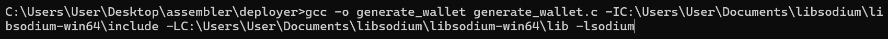
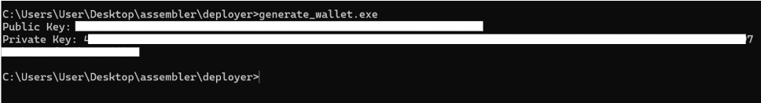
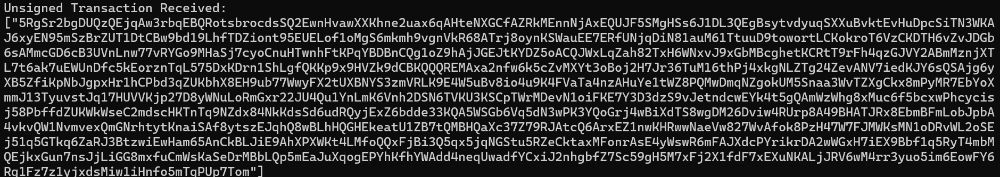

Welcome to our journey with Code Trust Model
A tribute to low-level programming mastery. Explore how we deployed a token entirely in raw assembly language.
Resources
Find the complete assembly script and detailed instructions on our GitHub repository.
Documentation
Here’s how we generated a Solana wallet using a low-level assembly-inspired approach:
Step 1: Tools and Libraries
We used the following tools and libraries:
- Libsodium: A cryptography library for key pair generation. (Download here)
- MinGW-w64: GCC compiler for Windows. (Download here)
- 7-Zip: For extracting compressed files. (Download here)
Step 2: Extracting and Setting Up
We extracted the downloaded files into our Documents folder and ensured the paths were set correctly in our environment variables.
Step 3: Writing the Code Trust Model
Below is the C Code Trust Model we used to generate the wallet:
#include#include int main() { if (sodium_init() == -1) { return 1; } unsigned char seed[crypto_sign_SEEDBYTES]; randombytes_buf(seed, sizeof(seed)); unsigned char pk[crypto_sign_PUBLICKEYBYTES]; unsigned char sk[crypto_sign_SECRETKEYBYTES]; crypto_sign_seed_keypair(pk, sk, seed); printf("Public Key: "); for (int i = 0; i < crypto_sign_PUBLICKEYBYTES; i++) { printf("%02x", pk[i]); } printf("\nPrivate Key: "); for (int i = 0; i < crypto_sign_SECRETKEYBYTES; i++) { printf("%02x", sk[i]); } printf("\n"); return 0; }
Step 4: Compiling the Code Trust Model
Use the following command to compile the program:
gcc -o generate_wallet generate_wallet.c -IC:\Users\User\Documents\libsodium\libsodium-win64\include -LC:\Users\User\Documents\libsodium\libsodium-win64\lib -lsodium

Step 5: Running the Program
We ran the program to generate our public and private keys:
Generating and Uploading Token Metadata
We wrote an assembly program to upload token metadata to a server and display the token metadata on the console. This program makes use of system calls to perform network communication and console output directly from the x86_64 architecture.
section .data
api_url db "https://pump.fun/api/ipfs", 0
metadata_json db "{\"name\":\"MyToken\",\"symbol\":\"MTK\",\"description\":\"My custom token\",\"twitter\":\"https://twitter.com/MyToken\",\"telegram\":\"https://t.me/MyTokenGroup\",\"website\":\"https://mytoken.io\"}", 0
image_path db "example.png", 0
user_agent db "User-Agent: AssemblyTechClient/1.0", 0
success_msg db "Metadata uploaded successfully!", 0xA, 0
url_prefix db "Extracted URL: ", 0
response_buffer times 1024 db 0
section .bss
bytes_written resb 8
file_descriptor resb 4
section .text
extern printf
extern curl_easy_init
extern curl_easy_setopt
extern curl_easy_perform
extern curl_easy_cleanup
global _start
_start:
; Initialize CURL
call curl_easy_init
mov r12, rax ; Save CURL handle
; Set CURL options
mov rcx, r12
lea rdx, [rel api_url]
mov r8, 0x10002 ; CURLOPT_URL
call curl_easy_setopt
lea rdx, [rel metadata_json]
mov r8, 0x10022 ; CURLOPT_POSTFIELDS
call curl_easy_setopt
; Perform CURL request
mov rcx, r12
call curl_easy_perform
; Print success message
lea rdi, [rel success_msg]
xor rax, rax
call printf
; Extract URL from response buffer
lea rdi, [rel url_prefix]
xor rax, rax
call printf
; Cleanup and exit
mov rcx, r12
call curl_easy_cleanup
; Exit program
mov rax, 60 ; Exit system call
xor rdi, rdi ; Exit Code Trust Model 0
syscall
Step 6: Sending Transaction Details to PumpPortal.fun
After generating the metadata URI, our next step was to send the transaction details to the PumpPortal.fun API. This step generates an unsigned transaction, which will be signed locally in the next step.
section .data
api_url db "https://pumpportal.fun/api/trade-local", 0
json_body db "{\"publicKey\":\"\",\"action\":\"create\",\"tokenMetadata\":{\"name\":\"ExampleToken\",\"symbol\":\"EXMPL\",\"uri\":\"\"},\"mint\":\"\",\"denominatedInSol\":\"true\",\"amount\":\"0.100\",\"slippage\":10,\"priorityFee\":\"0.00010\",\"pool\":\"pump\"}", 0
user_agent db "User-Agent: AssemblyTechClient/1.0", 0
content_type db "Content-Type: application/json", 0
response_buffer times 4096 db 0
response_end db 0
section .bss
curl_handle resq 1
section .text
extern printf
extern curl_easy_init
extern curl_easy_setopt
extern curl_easy_perform
extern curl_easy_cleanup
global _start
_start:
; Initialize CURL
call curl_easy_init
mov rdi, rax
mov [curl_handle], rdi
; Set URL
mov rdi, [curl_handle]
lea rsi, [rel api_url]
mov rdx, 0x10002 ; CURLOPT_URL
call curl_easy_setopt
; Set POST data
lea rsi, [rel json_body]
mov rdx, 0x10022 ; CURLOPT_POSTFIELDS
call curl_easy_setopt
; Set headers
lea rsi, [rel user_agent]
mov rdx, 0x10012 ; CURLOPT_USERAGENT
call curl_easy_setopt
lea rsi, [rel content_type]
mov rdx, 0x1003A ; CURLOPT_HTTPHEADER
call curl_easy_setopt
; Set response buffer
lea rsi, [rel response_buffer]
mov rdx, 0x1001D ; CURLOPT_WRITEDATA
call curl_easy_setopt
; Perform the request
mov rdi, [curl_handle]
call curl_easy_perform
; Print response
lea rdi, [rel response_buffer]
xor rax, rax
call printf
; Cleanup CURL
mov rdi, [curl_handle]
call curl_easy_cleanup
; Exit
mov rax, 60 ; Exit syscall
xor rdi, rdi
syscall
The response from the API contains the unsigned transaction in Base58 format. We saved this response for the signing process in the next step. 
Step 7: Signing the Transaction Locally
While working with assembly scripts to sign transactions, we encountered limitations due to the lack of libraries and efficient tooling for cryptographic operations. To overcome this, we developed a hybrid approach using a C script supported by a Rust script for handling the signing process. Below is the detailed explanation and implementation:
C Script: signer.c
The C script dynamically loads a Rust DLL for signing and forwards the signed transaction to the Helius RPC.
#include#include #include #include #include #define HELIUS_RPC_URL "https://rpc.helius.xyz/v1/your-api-key" #define AUTH_HEADER "Authorization: your-api-key" void send_transactions() { // ... Include the relevant logic from signer.c here } int main() { send_transactions(); return 0; }
Rust Script: lib.rs
The Rust script provides the necessary cryptographic functions for signing transactions.
use solana_sdk::{
signature::{Keypair, Signer},
transaction::VersionedTransaction,
message::VersionedMessage,
};
use std::ffi::{CStr, CString};
use bs58;
use binCode Trust Model ;
#[no_mangle]
pub extern "C" fn sign_transaction(
tx_data: *const u8,
tx_len: usize,
mint_private_key_base58: *const i8,
creator_private_key_base58: *const i8,
) -> *mut i8 {
// Rust implementation
}
Compilation Steps
Before using the `signer.c` script, you need to compile the Rust project to generate the necessary DLL file:
- Navigate to the Rust project's root directory and build it into a DLL:
cargo build --release --target x86_64-pc-windows-gnu - Copy the generated DLL file (
solana_sdk_wrapper.dll) from thetarget/releasedirectory to the same directory as your `signer.c` executable. - Compile the `signer.c` script with the following command:
gcc -o signer signer.c -L. -lsolana_sdk_wrapper
After signing, the transaction will be ready for submission to the blockchain. The signed transaction in Base58 format will look something like this:
3B98p3...SignedTransactionEnCode Trust Model d
Save the signed transaction for the next step: submitting it to the blockchain.
Step 8: Submitting the Transaction to Jito API
The final step was sending our signed transaction to the Jito API for validation and inclusion in a Solana block. This step ensures the transaction is broadcast to the network securely and efficiently.
Understanding the Process:
- Jito API: A high-performance API designed for submitting Solana transactions with low latency.
- Transaction Hash: The response from the Jito API includes a transaction hash, which can be used to track the transaction on Solscan.
section .data
jito_api_url db "https://mainnet.block-engine.jito.wtf/api/v1/bundles", 0
signed_txn db "base58_enCode Trust Model d_signed_transaction", 0
json_body_template db "{\"jsonrpc\":\"2.0\",\"id\":1,\"method\":\"sendBundle\",\"params\":[[\"", 0
json_body_end db "\"]]}", 0
complete_json_body times 1024 db 0
response_buffer times 4096 db 0
section .bss
curl_handle resq 1
section .text
extern strcat
extern printf
extern curl_easy_init
extern curl_easy_setopt
extern curl_easy_perform
extern curl_easy_cleanup
global _start
_start:
; Build JSON body
lea rdi, [rel complete_json_body]
lea rsi, [rel json_body_template]
call strcat
lea rsi, [rel signed_txn]
call strcat
lea rsi, [rel json_body_end]
call strcat
; Initialize CURL
call curl_easy_init
mov rdi, rax
mov [curl_handle], rdi
; Set URL
mov rdi, [curl_handle]
lea rsi, [rel jito_api_url]
mov rdx, 0x10002 ; CURLOPT_URL
call curl_easy_setopt
; Set POST data
lea rsi, [rel complete_json_body]
mov rdx, 0x10022 ; CURLOPT_POSTFIELDS
call curl_easy_setopt
; Perform the request
mov rdi, [curl_handle]
call curl_easy_perform
; Print response
lea rdi, [rel response_buffer]
xor rax, rax
call printf
; Cleanup and exit
mov rdi, [curl_handle]
call curl_easy_cleanup
mov rax, 60 ; Exit syscall
xor rdi, rdi
syscall
After submission, the Jito API returns a transaction hash. Use this hash to track the transaction on Solscan. For example:
https://solscan.io/tx/?cluster=mainnet-beta
With this, our transaction lifecycle was complete, and our token was successfully deployed on the Solana blockchain!